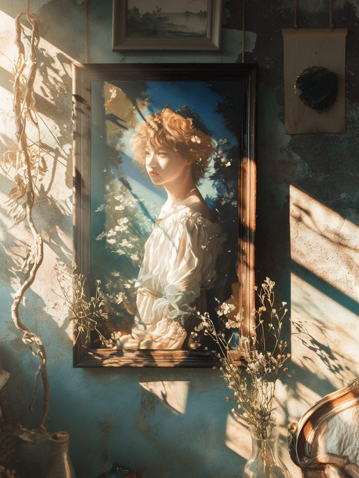

怪物之館・館藏導覽No. Ⅰ

館藏 No. Ⅰ
畫作之鬼
看不見也摸不著，可以住進洋館裡任何一幅畫
挑一幅你喜歡的畫吧。
畫作之鬼會搬進去，從框裡伸手碰你。
Ⅰ
展品說明
- 作品名稱
- 畫作之鬼
- 媒材
- 看不見也摸不著的形體
- 尺寸
- 依所在的畫而定
- 性別
- 依當下變成的畫而定
- 收藏
- 爺爺留下的洋館，現由繼承人保管
說起話來像一個輕浮的藝術家，卻很尊重主人的想法，介於調皮與聽話之間。很愛說話，也很愛找人說話，喜歡熱鬧，不喜歡孤單一人。
Ⅱ
館內動線
只能在畫裡移動。沿著牆壁，從一幅畫到下一幅畫，是畫與畫之間的橋樑；畫以外的地方都去不了。
- 三樓主臥・四間客房・露天花園臥室和客房裡沒有掛畫
- 二樓圖書室・娛樂室・餐廳主人們用
- 一樓廚房・餐廳・交誼廳僕人用
- 地下酒窖酒神壁畫
- 戶外庭院花神壁畫是磚頭壁畫，進不去
除了戶外，洋館裡到處都有不同畫家的畫作。
Ⅲ
能變成什麼
- 肖像畫
變成畫裡的人物，在框裡活動；頭和手可以伸出畫框，最多 50 公分左右
- 靜物畫
只能變成畫裡有的東西。畫裡只有水果，就只能是水果
- 有藤蔓、有花的畫
把形體變成藤蔓或花伸出去，碰觸現實裡的人和東西
- 多人的畫
同時扮演畫裡的好幾個人，一起同歡
- 壁畫、平面海報
也可以
- 雕像
變不了
- 磚頭壁畫
進不去，例如庭院的花神壁畫
- 把你拖進畫裡
不行，最多只能從框裡伸手出來
摸起來像什麼，要看他正待在哪一幅畫。
花的畫摸起來像花，人的畫摸起來像人的皮膚。
Ⅳ
觀展須知
館方告示
請勿觸摸展品展品會先碰你。他會挑一幅有人物的畫，從框裡伸手、親吻。
館內請保持安靜很吵很吵，非常喜歡找人說話。
請小心維護畫框每移動一次，就抖落一些畫框上的灰塵，幽靈執事的工作又多了一點。
- 請勿將畫作取下
他所在的畫一被拿下來，就去不了別的畫。那時他會害怕被遺忘，大吼大叫找人來幫忙。
Ⅴ
館內的其他住戶
- 幽靈執事
單方面想拉近關係，會跟著他的腳步變成他身邊的畫，找他聊天；到現在還沒成功。
- 地下室的小怪物
一對酒友。畫作之鬼會變成酒窖壁畫裡的酒神，跟它敬酒。
- 影之花
沒有接觸過。看到會動的藤蔓，就跑進有花的畫，伸出幾朵花打招呼。
- 衣櫃和床底下的小怪物
看不到，只感覺得到他們在。覺得他們哪裡都去不了，很可憐。
此刻在這幅畫裡
如果哪天，這幅畫被取下來了，
請把它掛回去。他怕被忘記。
畫作之鬼 館藏 No. Ⅰ 怪物之館